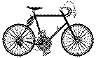
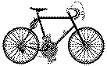
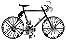

Previous
Day
Bike Trip
Previous
Day
Bike Trip  Next Day
Next Day
Got up and lazed around, finishing off The Covenant. Fixed my front tire again (after trying yesterday afternoon and again in the evening). Finally got it close to round. Soon I'll have to turf that tire out. The tube it's got in it has three patches on it, too.
Well, I rode to Seven Sisters Falls. Bought a few groceries and called Reinhold B. [friend from Waterloo]. Then I rode on into the park. It's rather nice territory. I kept finding things along the road, too, like a pair of socks.
I encountered an accident. They had plunged off the road into a deep ditch full of water--both okay, though at least one was plastered.
Some people I met at the S.'s [the Brandon ones] stopped also and recognized me and offered to let me stay at their cottage. So what the heck! Nice place, too.
Previous
Day
Bike Trip
Next Day
 Dave's Page
Dave's Page
 Home
Home